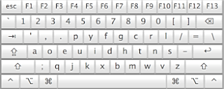

The Dvorak Keyboard is a major improvement over the QWERTY layout, which was designed to slow people's typing speed! Learning it may increase your typing speed, and even reduce the risk of repetitive strain injuries.
Back in the early 1990s, with the aid of some interesting parsing techniques, I devised a
typing course which, much like the tutors of the QWERTY keyboard,
starts you out on the home rows and gradually has you learning the
entire keyboard. With a Dvorak keyboard, you can type fairly interesting
words fairly quickly. (Anybody remember lessons like
"a sad lass; a dad falls"?)
I have been interested in the Dvorak keyboard layout for some time, but never was able to find a typing tutorial that properly taught this layout. I even bought a piece of commercial software that claimed to teach the Dvorak layout. But all they did was remap the keys and teach the same old QWERTY lessons. Yuck.
For the curious, or for reference, here is a picture of the keyboard layout. Notice how the commonly used keys are in the "home" rows and the more obscure letters are harder to reach.

Check out the FAQs, and when you are ready, let's begin the Dvorak Typing Tutor!
And when you are done ... if you like ABCD, feel free to show your appreciation by sending me something from my Amazon.com wish list.
Thanks for checking out ABCD!
Dan Wood
P.S. No, I am not planning on an iPhone edition of this! :-)